Workflow overview
Twelve screens, one connected delivery record.
The main path moves one order from replenishment to receipt. Exception branches remain visible and return to the same order lifecycle.
Store | Order replenishmentChoose full cartons and place the order before 16:00.
Dispatcher | Confirmed order queueSelect confirmed orders and review service risk.
Dispatcher | Plan & validateAssign stops and vehicle, then check feasibility.
Loader | Loading manifestLoad in reverse stop order and check each shipment.
Driver | Next stopRecord arrival, exceptions, and delivery.
Driver | Proof of deliveryVerify cartons, recipient, and time.
Store | Receipt checkInspect the POD, confirm receipt, or report an issue.
Deferral branch
From the confirmed queue, Dispatch records a reason and impact, then Store sees the consequence.
Loading branch
A missing, damaged, or mismatched shipment pauses until the loader records a resolution.
Delivery branch
A failed stop stays outstanding for a return visit and never counts as a completed delivery.
Store manager | Screen 01
Order replenishment
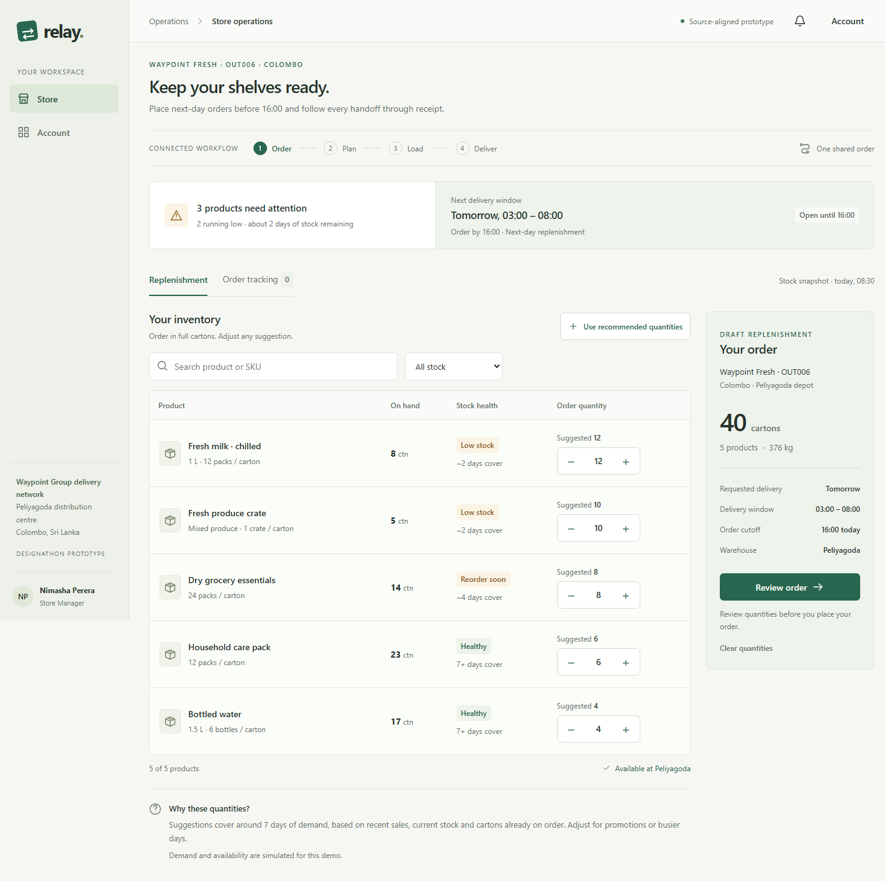
Inventory and a full-carton draft for OUT006.Store manager | Order replenishment
RationaleStock health, full-carton suggestions and the 16:00 cutoff help a counter manager choose quantities quickly without a separate spreadsheet.
Store manager | Screen 02
Order tracking & ETA
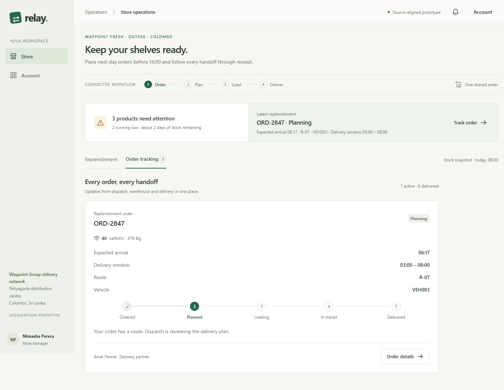
The same OUT006 order after Dispatch assigns R-07 and VEH003.Store manager | Order tracking & ETA
RationaleOrder status, calculated arrival, delivery window and vehicle help the outlet prepare staff and space for the expected handoff.
Store manager | Screen 03
Receipt check
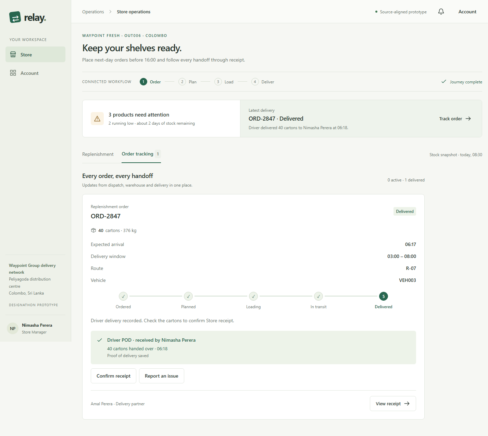
Driver POD is visible before the Store manager accepts the stock.Store manager | Receipt check
RationaleDriver POD sits beside Confirm receipt and Report an issue, so the outlet can check cartons and record a discrepancy at the counter.
Dispatcher | Screen 04
Confirmed order queue
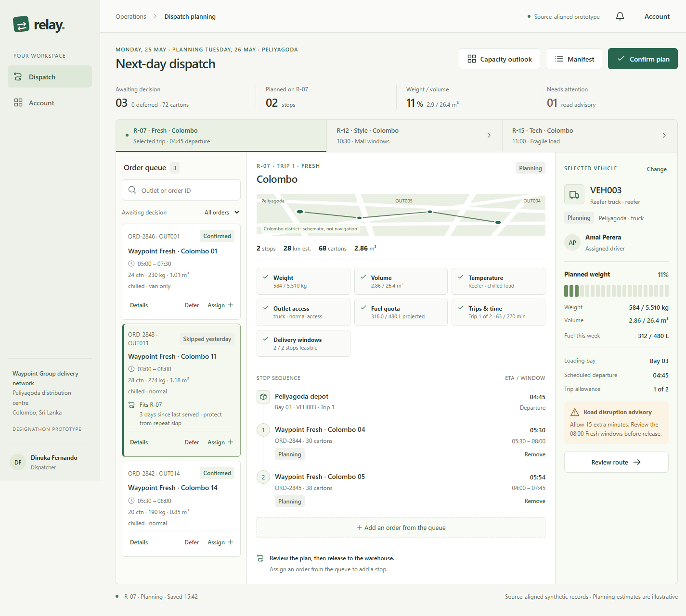
Confirmed and priority orders beside the current R-07 plan.Dispatcher | Confirmed order queue
RationaleOrders, windows and service risk appear together so a planner at a large screen can choose the next assignment.
Dispatcher | Screen 05
Plan & validate
 R-07 Fresh in Colombo with route and vehicle evidence together.Dispatcher | Plan & validate
R-07 Fresh in Colombo with route and vehicle evidence together.Dispatcher | Plan & validate
RationaleStop sequence, vehicle and seven checks expose an infeasible plan together on the dispatcher's large screen before release.
Dispatcher | Screen 06
Deferral decision
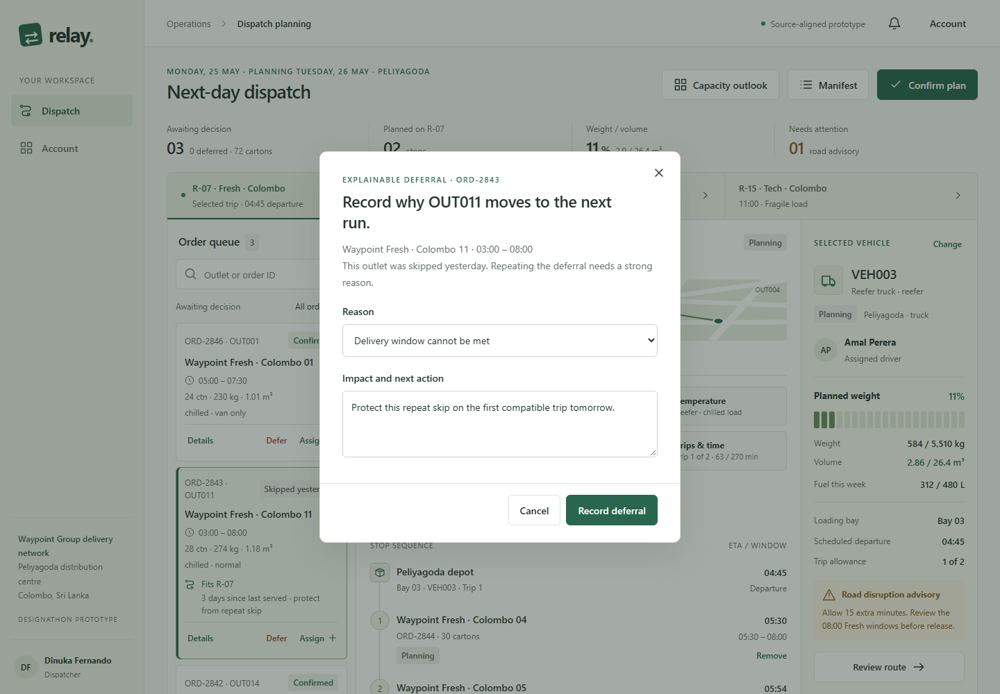
A repeat skip requires both a reason and a concrete next action.Dispatcher | Deferral decision
RationaleA reason and impact note make a skipped outlet visible and defensible at the planning desk when this run cannot serve it.
Dispatcher | Screen 07
Delivery & receipt follow-up
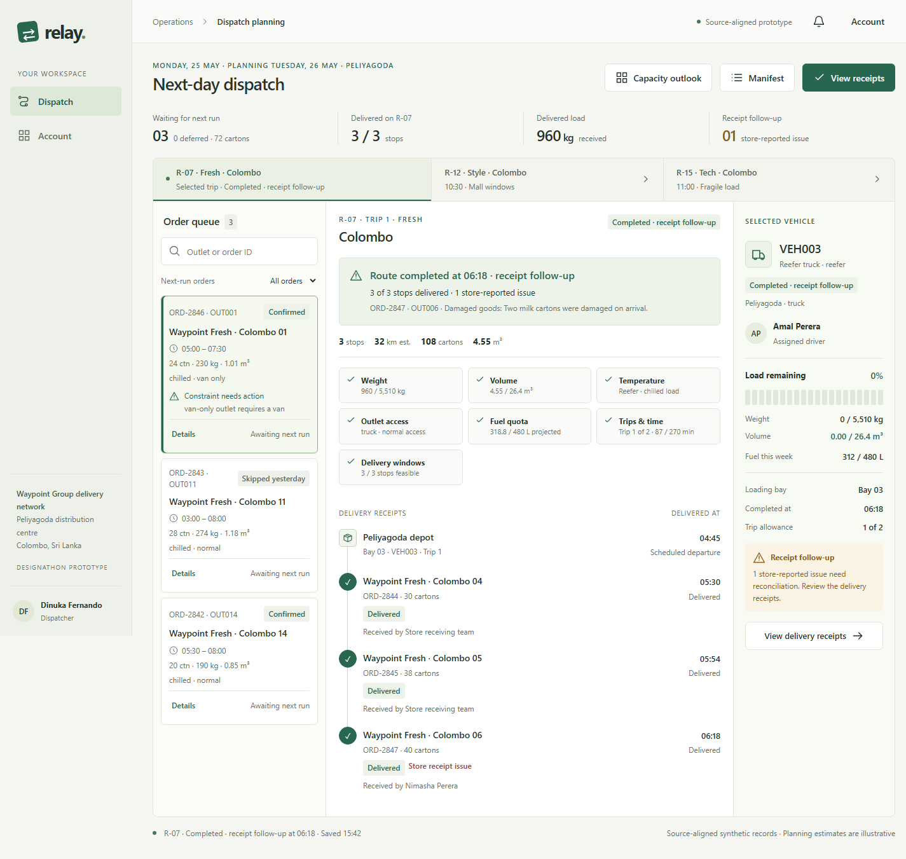
Completed delivery remains complete while the Store issue is identified for reconciliation.Dispatcher | Delivery & receipt follow-up
RationaleThe dispatch overview keeps delivered stops complete while identifying the order, outlet and receipt discrepancy for reconciliation.
Loader | Screen 08
Loading manifest
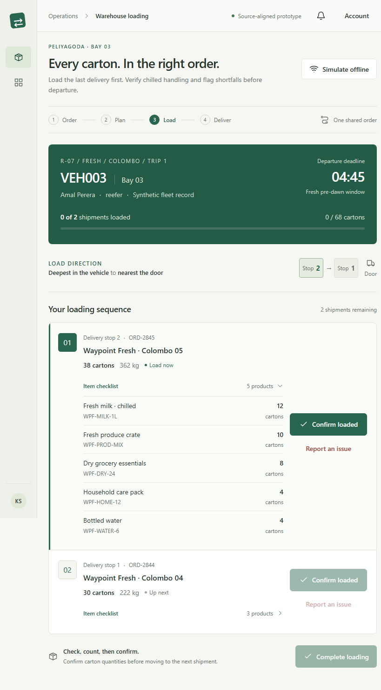
The last delivery stop is presented first for loading.Loader | Loading manifest
RationaleReverse stop order and carton counts guide fast loading on a shared warehouse tablet without burying the next shipment.
Loader | Screen 09
Loading exception
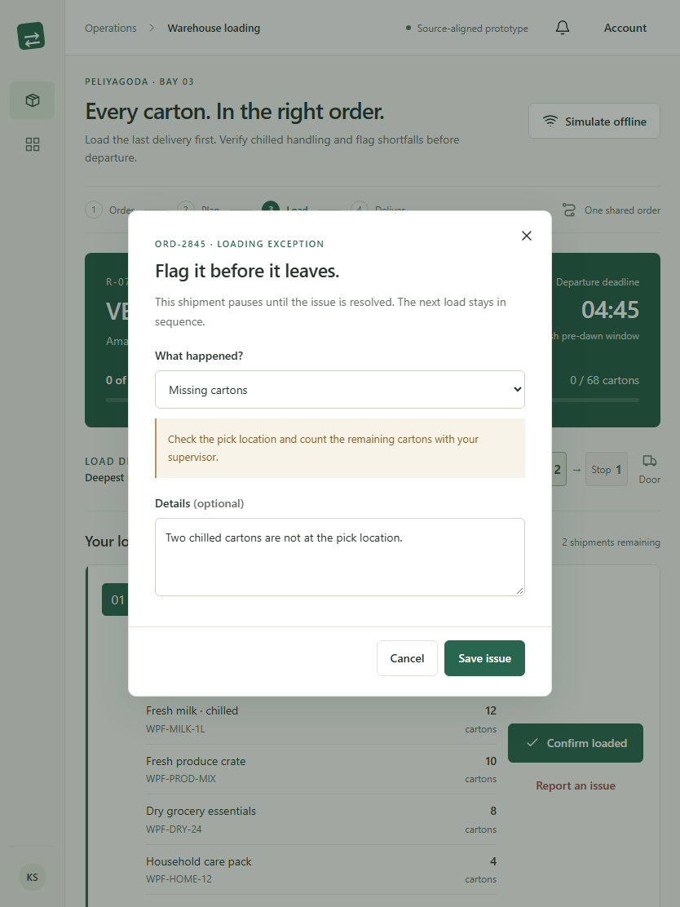
The shipment pauses before it leaves the bay.Loader | Loading exception
RationaleA blocked shipment and resolution note let dock staff stop a short or damaged load before it leaves the bay.
Driver | Screen 10
Next stop
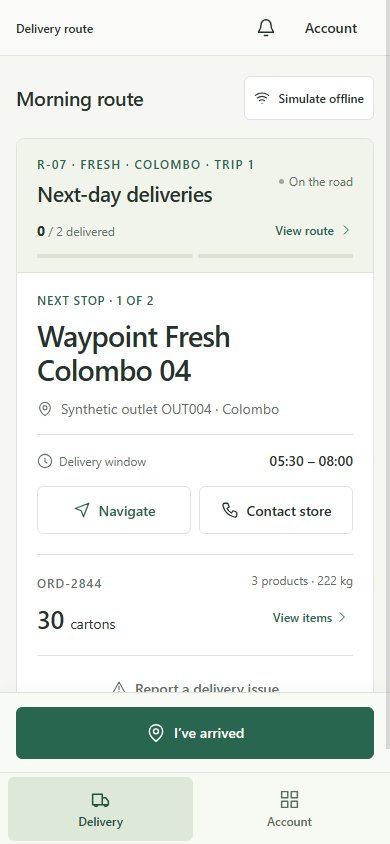
One current stop and one prominent next action.Driver | Next stop
RationaleThe current stop, window, contact and next action stay prominent on a phone used only while safely stopped.
Driver | Screen 11
Delivery exception
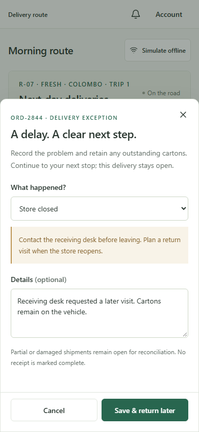
A closed Store remains an outstanding stop for a return visit.Driver | Delivery exception
RationaleA reason, details and return-visit path keep an undelivered stop visible when access or goods prevent handoff.
Driver | Screen 12
Proof of delivery
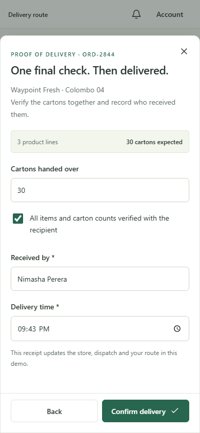
The driver cannot complete delivery without the full receipt record.Driver | Proof of delivery
RationaleCarton verification, recipient and time create a clear delivery record on the phone for Store and Dispatch to inspect.